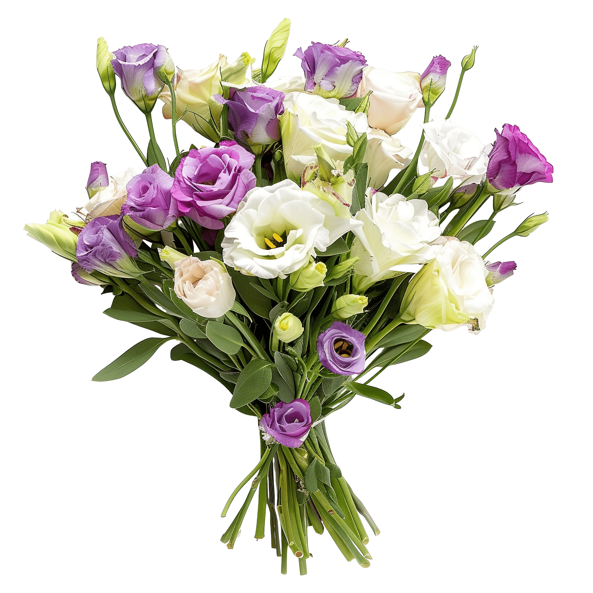
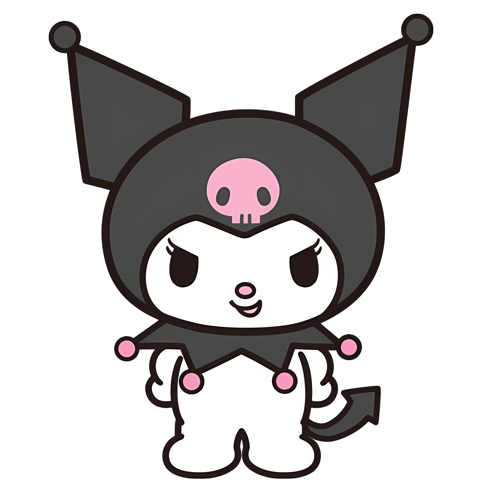
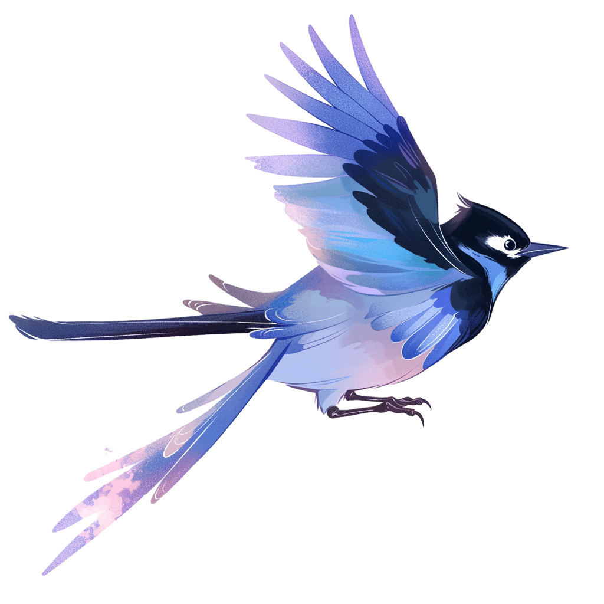

有人给你写了一封信~



嗨，如果你真的看到这里，那应该说明，你还是愿意打开这封信。
其实很多话，我一直想和你说，多到我有时候自己都不知道应该从哪一句开始。 我想了很久，最后还是决定从一个很简单的问题开始。
我到底为什么喜欢你？
我以前刚开始可能会觉得，是因为你一开始对我的主动，是因为你愿意靠近我， 是因为你总是愿意回应我。
不过后来我发现，好像并不是。
我喜欢的从来不只是一开始会主动找我的你。 我还喜欢爱生气的你，喜欢一点小委屈就掉眼泪的小哭包， 喜欢爱耍赖的你，明明有时候自己都知道自己没道理， 却还是要跟我争的样子，简直不要太可爱。
也喜欢你早上刚睡醒，迷迷糊糊的就给我发语音， 那声音每次都把我的心融化。
也喜欢连冲凉都会发信息的你， 甚至喜欢你一生气就不说话， 聊前女友时疯狂吃醋的样子， 喜欢你不开心就瞪我的样子。
那时候我好像觉得这一切都是理所应当的。 好像只要我想找你，你就会一直在那里。
但现在回想起，我才发现， 原来那些看起来很普通的「句句有回应」， 也是一种很珍贵的偏爱。
只是，我没能好好珍惜你的一切。
其实我最舍不得的，并不是那些我们拥有过的回忆， 而是我们还有好多好多事情，还没来得及一起经历。
我们还没有面对面相处过， 还没有牵手一起散步， 还没有深情拥抱过， 没有情不自禁地接吻过， 甚至连一次真正认真、面对面、手捧鲜花的告白都还没有。
我们还没有一起去超市买过菜， 没有一起在厨房忙到乱七八糟， 我做饭，你在旁边洗碗。
还没有一起经历那些看似普通， 却又很幸福的日子。
可偏偏现在才发觉， 这些我最舍不得的， 其实不是过去。
而是我人生中的女主角—— 你。
我想很认真地跟你说一句： 对不起，乙萱。
对不起我以前给你说过这么多重话。 对不起我曾经因为自己的情绪， 让你觉得自己好像做得不够好。
那时候的我，与其说没有安全感， 其实更多的是害怕失去你。
你没有及时回复我， 我就会开始胡思乱想。 会想你是不是不开心， 是不是不想理我了， 是不是慢慢不需要我了。
甚至会害怕， 你是不是有一天真的会不要我。
所以，我的情绪变得不稳定。 把自己的害怕变成了你的压力， 把自己的不安变成了你的委屈。
有时候甚至会用一些不好听的话， 把我自己的难过丢给你。
经历了失去后，我才醒悟， 现实是你没有及时回复信息罢了， 其他都是我自己脑补的结局。 所以，那不是你的错。
你也有自己的工作， 有自己的家庭， 更有自己的压力。 你也会累，也会有不想说话的时候。
而作为你的男朋友， 那时候的我却没有真正站在你的角度去想。
我只是一直害怕失去你， 却忘记了真正喜欢一个人， 不应该让她一直证明自己还爱你。
我本来应该成为那个让你安心的人， 让你累的时候，可以靠一下的人； 让你什么都不用解释， 也知道我不会离开的人； 让你想独处的时候， 我也愿意安静地在身后等你的人。
可是那时候我没有做到。
我自以为是的爱， 变成了困住你的枷锁。
作为一个男朋友， 我是失职的。
我多希望自己可以成为你的温暖， 而不是压力。
我知道，我亲手把一个很爱的人弄丢了。 这一点，我一直很自责。
但我不想让自责成为我唯一为这段感情做的事。
至于改变，无需多言。
行动证明。
你知道吗？
小王子曾经遇到很多很多漂亮的玫瑰， 可最后他还是想要那一朵玫瑰。
而我也遇见了我的那朵玫瑰。
她可能爱生气，会哭，会耍赖，会逃避， 可是偏偏就是这样的她， 才是我喜欢的她。
我喜欢的从来不是一个完美的你， 而是真实的你。
我舍不得的根本不是什么谈恋爱的感觉。
我舍不得的是你。
所以今天，我不想拐弯抹角， 想认真地告诉你——
我喜欢你。
不是因为我们曾经在一起， 也不是因为我不甘心。
而是我在分开以后， 真正冷静下来思考后才发现， 我喜欢的人，一直以来只有你。
只是这一次， 我不想再像以前那样。
我终于明白， 爱不是索取，不是控制。
爱是包容， 是允许你做自己。
19.8.2026
乙萱，七夕节快乐。
这一天，也原本是我们在一起两个月的日子。
这是一封告白信。
我想把它写成故事的开始。
恰好今天是一个意义非凡的日子， 所以我想在今天这么特别的日子里， 认真地告诉你——
我还喜欢你。
谢谢你。
你短暂的离别， 留给了我成长的空间。
它让我意识到自己的问题， 也让我第一次真正发现， 原来我真的有奋不顾身去爱一个人的勇气。
而那个人， 从始至终，还是你。
如果你愿意， 故事的下一页，还是想和你一起写。